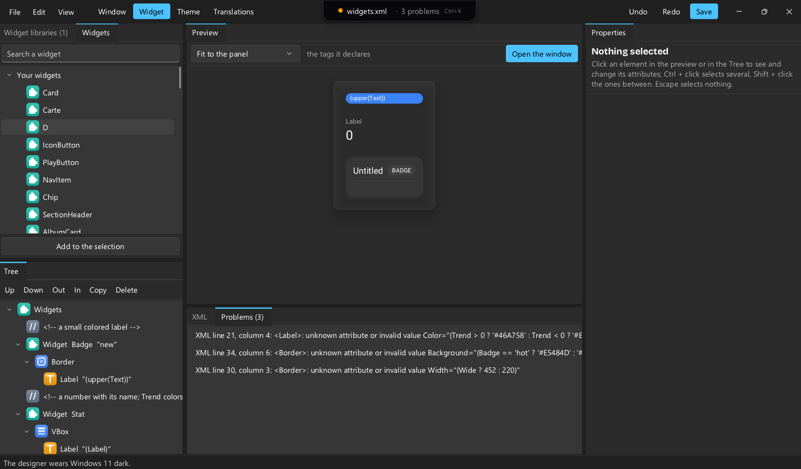
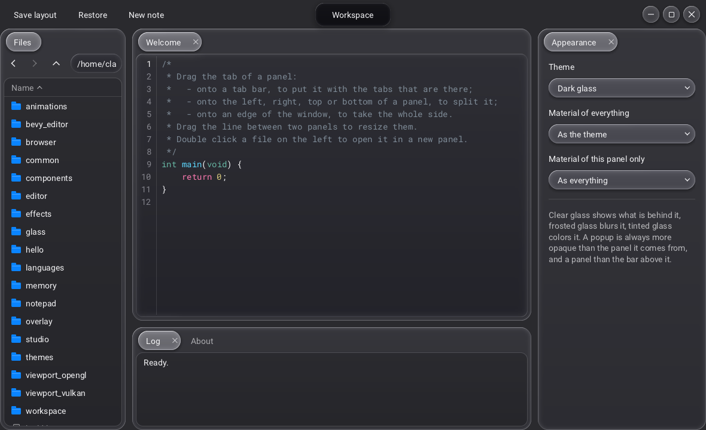
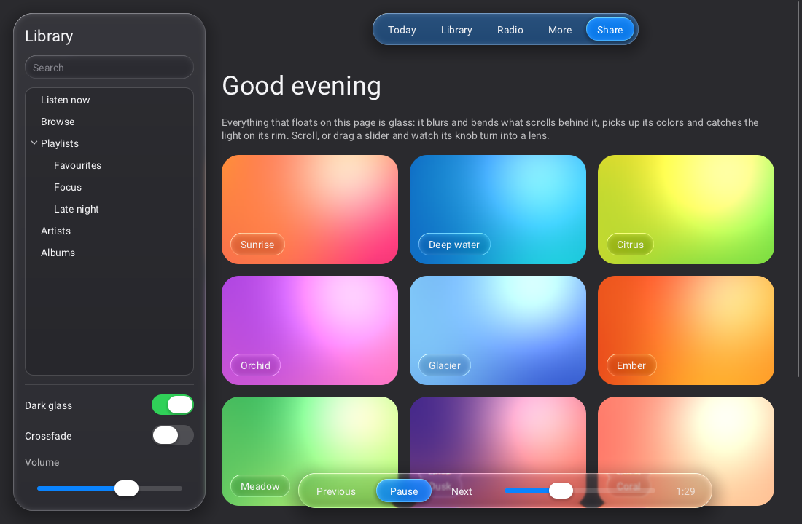

An open source native GUI library in C.
Free, lightweight, multithreaded, no dependency. Built for editors and tools, usable from the language you like.
Get started DownloadBindings for all of them. For example: pip install raven-gui

Why Raven
- Open source. Apache-2.0: use it for anything, commercial included. No watermark, no paid edition.
- Truly native. Its own windows on Win32, X11, Wayland and Cocoa.
- Small. About 3 MB for the shared library, fonts included.
- Fast. Multithreaded, GPU drawing with Vulkan loaded at run time.
- Complete. Widgets, docking, themes, glass, text editor, node graph, timeline.
- Simple. Describe your interface in C, in XML, or both.
A window in a few lines
#include <Raven.h> static void on_clicked(Rid button, void* user) { Rquit(0); } int main(void) { Rinit(R_BACKEND_VULKAN); Rid window = Rwindow_create("Hello", 420, 220, R_WINDOW_DEFAULT); Rid box = Rwidget_create(R_WIDGET_VBOX); Rpanel_set_spacing(box, 12); Rwindow_set_content(window, box); Rwidget_add_child(box, Rlabel_create("Hello from Raven")); Rid button = Rwidget_add_child(box, Rbutton_create("Quit")); Rbutton_set_clicked_callback(button, on_clicked, NULL); while (Rwait_frame(-1.0)) {} Rshutdown(); return 0; }
The same window in XML:
<Window Title="Hello" Width="420" Height="220"> <VBox Spacing="12"> <Label>Hello from Raven</Label> <Button Text="Quit" OnClicked="app.quit"/> </VBox> </Window>
The designer
raven_designer is a visual designer. Draw your windows and widgets, shape your styles, write your translations, and more, all graphically.
and the designer itself is built with Raven

Examples




Raven compared with Qt, Clay and Dear ImGui
Four libraries that put an interface on a screen, in four different shapes. Raven and Qt are complete toolkits; Dear ImGui is an immediate-mode library for tools; Clay only computes layout. A ❌ on a smaller library is therefore a choice of scope, not a defect, and the rows are not meant to rank them. ✅ yes, built in · 🟡 partly, or through add-ons or your own code · ❌ no.
| Raven | Qt 6 | Clay | Dear ImGui | |
|---|---|---|---|---|
| How they work | ||||
| Nature | Complete GUI toolkit | Complete application framework | Layout only | Immediate-mode UI for tools |
| API language | C11; bindings for C++, Python, Rust, Go, C#, Zig, LuaJIT | C++ and QML; Python via PySide6 | C, a single header | C++; C through cimgui |
| Model | Retained tree; only changes are redrawn | Retained; event-driven | Tree declared every frame | Code runs and draws every frame |
| Rendering | Vulkan (MoltenVK on macOS) | RHI: Vulkan, Metal, Direct3D, OpenGL | None: outputs draw commands | None: about 20 backends |
| Platforms | Windows, Linux (X11 or Wayland), macOS. No mobile, no web | Desktop, mobile, embedded, web | Anywhere C compiles, WebAssembly included | Desktop, consoles, embedded, web |
| Dependencies | None linked | Modules and platform plugins | None | A backend |
| Build | CMake 3.16+, C11 compiler | CMake, moc, rcc, uic | One header | Add the .cpp files |
| What it has | ||||
| Layout system | ✅ | ✅ | ✅ | 🟡 |
| Interface in markup | ✅ | ✅ | ❌ | ❌ |
| Live reload | ✅ | ✅ | ❌ | ❌ |
| Native windows | ✅ | ✅ | ❌ | ❌ |
| Standard controls | ✅ | ✅ | ❌ | ✅ |
| Very long lists | ✅ | ✅ | ❌ | ✅ |
| Code editor | ✅ | ✅ | ❌ | 🟡 |
| Docking | ✅ | ✅ | ❌ | 🟡 |
| Specialized tools | ✅ | ✅ | ❌ | 🟡 |
| Web pages | 🟡 | ✅ | ❌ | ❌ |
| Theming | ✅ | ✅ | 🟡 | 🟡 |
| Glass and blur | ✅ | ✅ | ❌ | ❌ |
| Animation | ✅ | ✅ | ❌ | ❌ |
| Custom shaders | ✅ | ✅ | 🟡 | 🟡 |
| Translations | ✅ | ✅ | ❌ | ❌ |
| Right to left, shaping | 🟡 | ✅ | ❌ | ❌ |
| Accessibility | ✅ | ✅ | ❌ | ❌ |
| Visual designer | ✅ | ✅ | 🟡 | ❌ |
| Headless tests | ✅ | ✅ | 🟡 | 🟡 |
| The project | ||||
| License | Apache 2.0 | LGPL 3, GPL or commercial | zlib | MIT |
| Maturity | Version 0.1; API may change; small community | Since the 1990s; vast ecosystem | Since 2024; fast-moving | Since 2014; large community |
| Fits best | Desktop tools and editors in C or its bindings | Large cross-platform apps, mobile and embedded | Engines that already own the renderer | Debug panels in real-time apps |
This is Raven’s own manual, so read it with that in mind. Written in October 2026 from the documentation of each project (Qt licensing, Clay, Dear ImGui) and from this manual for Raven; if a cell is wrong or out of date, please open an issue.
Releases
prebuilt packages are attached to each release